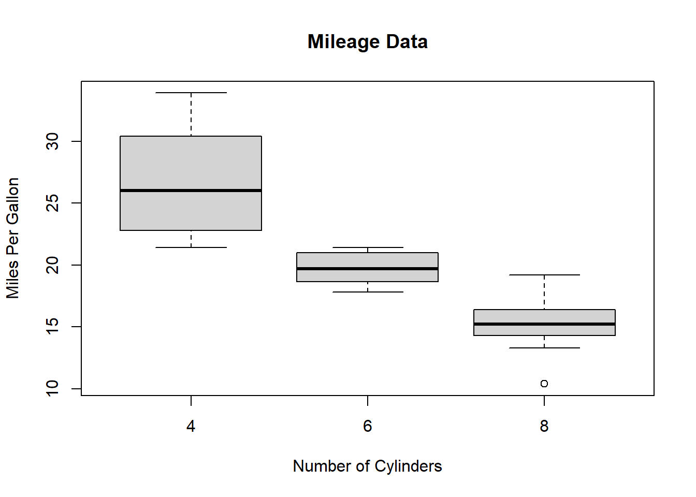

GRAPHICAL REPRESENTATION OF DATA
One reason why R is so popular among statistician or data scientist is because of its capability to visualize the data with easy. There are a ton of in built as- well -as graphical packages to produce good looking and highly customizable graphs or diagrams. In this chapter we will discuss few commonly used tools for graphical represntation of data.
Scatter plot
A scatter plot is a plot of two variables in a two dimensional XY plan with one variable along X- axis and another variable along Y-axis.
weight=c(65,55,87,54,52,69,47,77,59,60)
height=c(150,160,172,156,145,151,161,170,166,155)
plot(weight,height)The command plot(x,y) gives a simple 2D plot of the variable x along x-axis and variable y along y-axis.
plot(weight,height,
main = "A scatter plot of weight and height of 10 persons",
xlab = "Weights in Kilogram",ylab = "Heights in Centimeter",
col="red",
lwd=10)We can change the type of the plot using type=" "
“p” for points,
“l” for lines,
“b” for both,
“c” for the lines part alone of “b”,
“o” for both ‘over-plotted’,
“h” for ‘histogram’ like (or ‘high-density’) vertical lines,
“s” for stair steps,
“S” for other steps, see ‘Details’ below,
“n” for no plotting.
main=" " : is use to Give a Title to the graph
sub=" " : is use to specify a subtitle to the graph
ylab=" " : Y axis title
xlab="" : X axis title
col=" " : color of the graph
lwd= : line/point width.
plot(1:10,weight,
type = "l",
main = "A line Diagram of Weight of a Student for past 10 months",
sub = "Figure x.x.x",
xlab = "Months", ylab = "Weights in Kg",
col="steelblue",lwd=5) More than one line can be drawn on the same chart by using the lines()function.
More than one line can be drawn on the same chart by using the lines()function.
After the first line is plotted, the lines() function can use an additional vector as input to draw the second line in the chart,
# Create the data for the chart.
v <- c(7,12,28,3,41)
t <- c(14,7,6,19,3)
# Plot the bar chart.
plot(v,type = "o",col = "red", xlab = "Month", ylab = "Rain fall",
main = "Rain fall chart")
lines(t, type = "o", col = "blue")When we have more than two variables and we want to find the correlation between one variable versus the remaining ones we use scatter-plot matrix. We use pairs() function to create matrices of scatter-plots.
The basic syntax for creating scatter-plot matrices in R is −
pairs(formula, data)Following is the description of the parameters used −
formula represents the series of variables used in pairs.
data represents the data set from which the variables will be taken.
Example
Each variable is paired up with each of the remaining variable. A scatter-plot is plotted for each pair.
# Plot the matrices between 4 variables giving 12 plots.
# One variable with 3 others and total 4 variables.
pairs(~wt+mpg+disp+cyl,data = mtcars,
main = "Scatterplot Matrix")mtcars is a pre-stored data frame in R library.
Bar Chart
A bar chart represents data in rectangular bars with length of the bar proportional to the value of the variable. R uses the function barplot() to create bar charts. R can draw both vertical and Horizontal bars in the bar chart. In bar chart each of the bars can be given different colors.
The basic syntax to create a bar-chart in R is −
barplot(H,xlab,ylab,main, names.arg,col)Following is the description of the parameters used −
- H is a vector or matrix containing numeric values used in bar chart.
- xlab is the label for x axis.
- ylab is the label for y axis.
- main is the title of the bar chart.
- names.arg is a vector of names appearing under each bar.
- col is used to give colors to the bars in the graph.
Example
A simple bar chart is created using just the input vector and the name of each bar.
The below script will create a simple bar chart:
The features of the bar chart can be expanded by adding more parameters. The main parameter is used to add title. The col parameter is used to add colors to the bars. The args.name is a vector having same number of values as the input vector to describe the meaning of each bar.
Example:
# Create the data for the chart
H <- c(7,12,28,3,41)
M <- c("Mar","Apr","May","Jun","Jul")
# Plot the bar chart
barplot(H,names.arg=M,xlab="Month",ylab="Revenue",col="blue",
main="Revenue chart",border="red")We can create bar chart with groups of bars and stacks in each bar by using a matrix as input values.
More than two variables are represented as a matrix which is used to create the group bar chart and stacked bar chart.
Example:
# Create the input vectors.
colors = c("green","orange","brown")
months <- c("Mar","Apr","May","Jun","Jul")
regions <- c("East","West","North")
# Create the matrix of the values.
Values <- matrix(c(2,9,3,11,9,4,8,7,3,12,5,2,8,10,11),
nrow = 3, ncol = 5, byrow = TRUE)
# Create the bar chart
barplot(Values, main = "Total Revenue Collected",
names.arg = months, xlab = "Month",
ylab = "Revenue", col = colors)
# Add the legend to the chart
legend("topleft", regions, cex = 1.3, fill = colors)
Box Plot
Box plots are a measure of how well distributed is the data in a data set. It divides the data set into three quartiles. This graph represents the minimum, maximum, median, first quartile and third quartile in the data set. It is also useful in comparing the distribution of data across data sets by drawing boxplots for each of them.
Box plots are created in R by using the boxplot() function.
The basic syntax to create a boxplot in R is −
boxplot(x, data, notch, varwidth, names, main)Following is the description of the parameters used −
x is a vector or a formula.
data is the data frame.
notch is a logical value. Set as TRUE to draw a notch.
varwidth is a logical value. Set as true to draw width of the box proportionate to the sample size.
names are the group labels which will be printed under each boxplot.
main is used to give a title to the graph.
Example
boxplot(mpg ~ cyl, data = mtcars, xlab = "Number of Cylinders",
ylab = "Miles Per Gallon", main = "Mileage Data")
We can draw boxplot with notch to find out how the medians of different data groups match with each other.
The below script will create a boxplot graph with notch for each of the data group.
# Plot the chart.
boxplot(mpg ~ cyl, data = mtcars,
xlab = "Number of Cylinders",
ylab = "Miles Per Gallon",
main = "Mileage Data",
notch = TRUE,
varwidth = TRUE,
col = c("green","yellow","purple"),
names = c("High","Medium","Low")
)Histogram
A histogram represents the frequencies of values of a variable bucketed into ranges. Histogram is similar to bar chat but the difference is it groups the values into continuous ranges. Each bar in histogram represents the height of the number of values present in that range.
R creates histogram using hist() function. This function takes a vector as an input and uses some more parameters to plot histograms.
The basic syntax for creating a histogram using R is −
hist(v,main,xlab,xlim,ylim,breaks,col,border)Following is the description of the parameters used −
v is a vector containing numeric values used in histogram.
main indicates title of the chart.
col is used to set color of the bars.
border is used to set border color of each bar.
xlab is used to give description of x-axis.
xlim is used to specify the range of values on the x-axis.
ylim is used to specify the range of values on the y-axis.
breaks is used to mention the width of each bar.
Example A simple histogram is created using input vector, label, col and border parameters.
# Create data for the graph.
v <- c(9,13,21,8,36,22,12,41,31,33,19)
# Create the histogram.
hist(v,xlab = "Weight",col = "yellow",border = "blue")To specify the range of values allowed in X axis and Y axis, we can use the xlim and ylim parameters.
The width of each of the bar can be decided by using breaks.
# Create data for the graph.
v <- c(9,13,21,8,36,22,12,41,31,33,19)
# Create the histogram.
hist(v,xlab = "Weight",col = "green",border = "red", xlim = c(0,40), ylim = c(0,5),
breaks = 5)
Pie Diagram
A pie-chart is a representation of values as slices of a circle with different colors. The slices are labeled and the numbers corresponding to each slice is also represented in the chart.
In R the pie chart is created using the pie() function which takes positive numbers as a vector input. The additional parameters are used to control labels, color, title etc.
The basic syntax for creating a pie-chart using the R is −
pie(x, labels, radius, main, col, clockwise)Following is the description of the parameters used −
x is a vector containing the numeric values used in the pie chart.
labels is used to give description to the slices.
radius indicates the radius of the circle of the pie chart.(value between −1 and +1).
main indicates the title of the chart.
col indicates the color palette.
clockwise is a logical value indicating if the slices are drawn clockwise or anti clockwise.
Example:
A very simple pie-chart is created using just the input vector and labels. The below script will create and save the pie chart in the current R working directory.
# Create data for the graph.
x <- c(21, 62, 10, 53)
labels <- c("London", "New York", "Singapore", "Mumbai")
# Plot the chart.
pie(x,labels)
We can expand the features of the chart by adding more parameters to the function. We will use parameter main to add a title to the chart and another parameter is col which will make use of rainbow colour pallet while drawing the chart. The length of the pallet should be same as the number of values we have for the chart. Hence we use length(x).
Example The below script will create and save the pie chart in the current R working directory.
# Create data for the graph.
x <- c(21, 62, 10, 53)
labels <- c("London", "New York", "Singapore", "Mumbai")
# Plot the chart with title and rainbow color pallet.
pie(x, labels, main = "City pie chart", col = rainbow(length(x)))We can add slice percentage and a chart legend by creating additional chart variables.
# Create data for the graph.
x <- c(21, 62, 10,53)
labels <- c("London","New York","Singapore","Mumbai")
piepercent<- round(100*x/sum(x), 1)
# Plot the chart.
pie(x, labels = piepercent, main = "City pie chart",col = rainbow(length(x)))
legend("topright", c("London","New York","Singapore","Mumbai"), cex = 0.8,
fill = rainbow(length(x)))